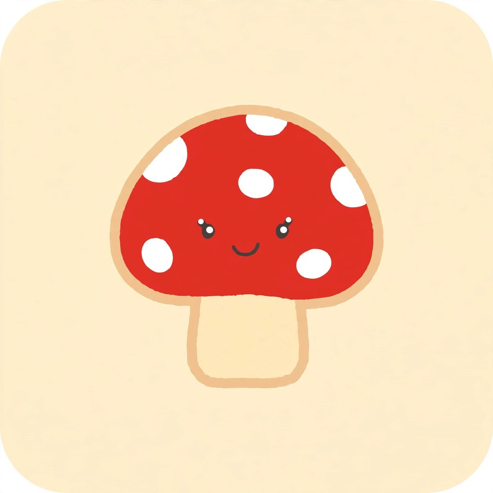
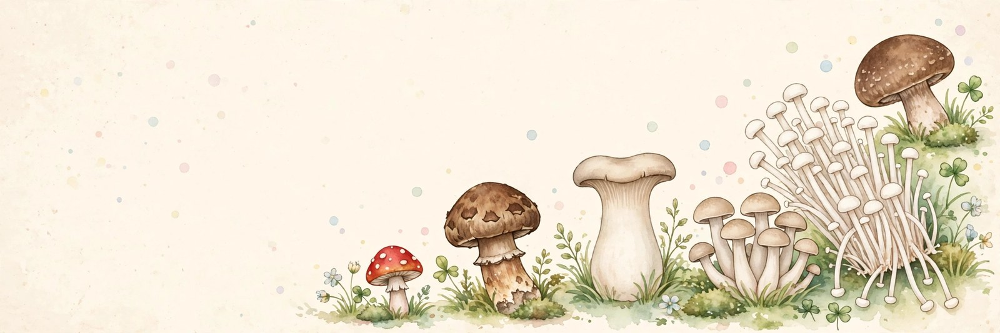
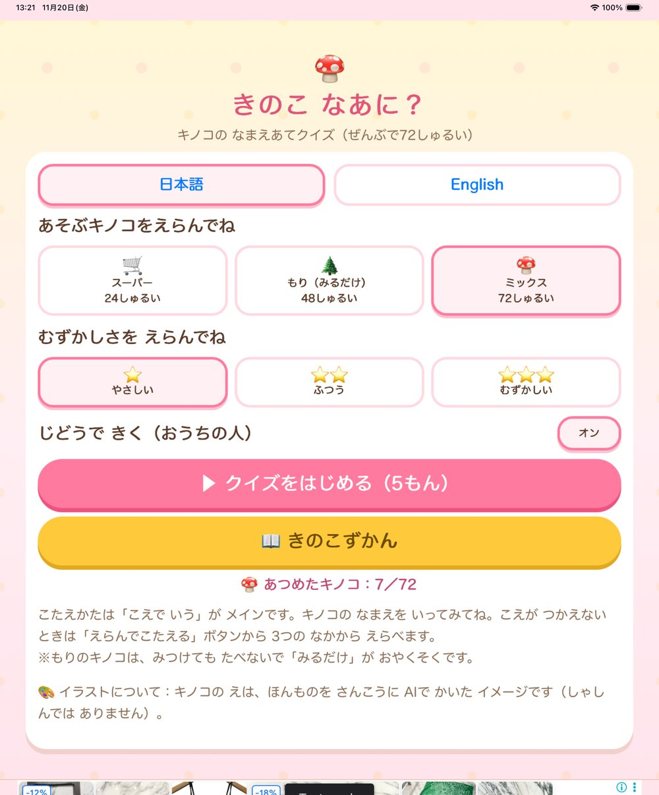
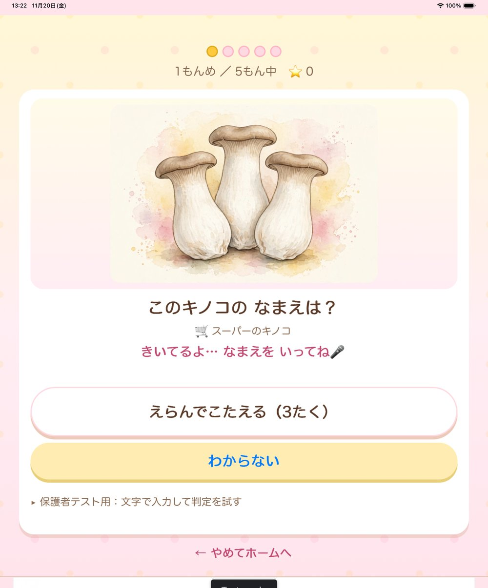
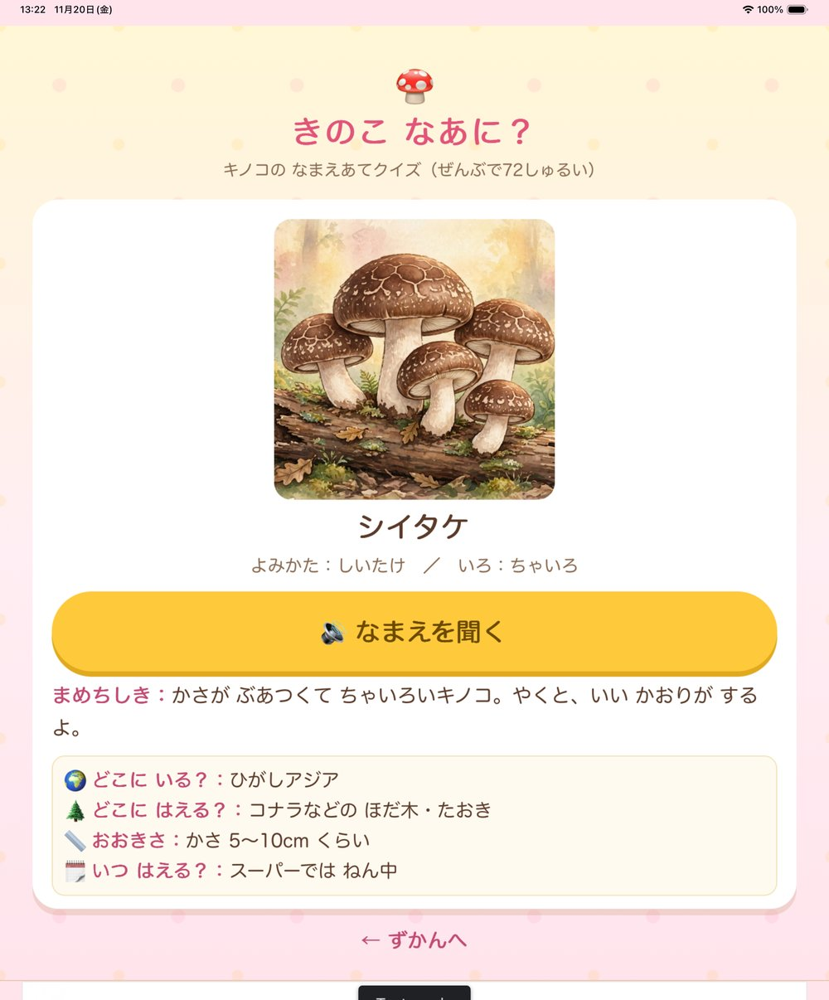
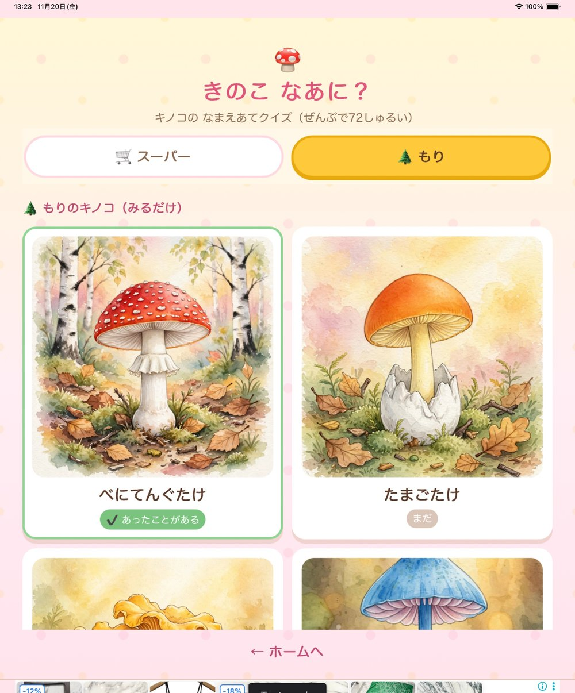

きのこ なあに？
声で答える、キノコの名前当てクイズ。
全72種の水彩イラスト図鑑つき。


声で答える、キノコの名前当てクイズ。
全72種の水彩イラスト図鑑つき。

キノコのイラストが出たら、名前を声で言って答えます。まだ字が読めない子でも遊べます。声が使えないときは、3つの中から選ぶ答え方もできます。
スーパーで買えるキノコ24種と、森のキノコ48種。水彩タッチのイラストに、色・大きさ・生える場所などの豆知識が付いています。
毒キノコには「どく」マーク付き。見分け方を知ることで、森のキノコは「見るだけ」という約束も自然に学べます。




・対象は未就学〜小学校低学年のお子さまです。アカウント登録は不要で、アプリ内に外部リンクや課金要素はありません。
・広告は子ども向け設定のバナー広告のみを表示します。
・キノコのイラストは、実物を参考にAIで描いたイメージです。森のキノコは見つけても食べず、「見るだけ」がお約束です。
・難易度は3段階、日本語と英語に対応しています。